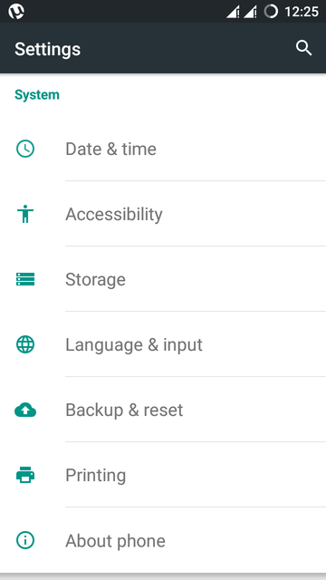

MAC, Media Access Control, address is a globally unique identifier assigned to network devices, and therefore it is often referred to as hardware or physical address. MAC addresses are 6-byte (48-bits) in length, and are written in MM:MM:MM:SS:SS:SS format. The first 3-bytes are ID number of the manufacturer, which is assigned by an Internet standards body. The second 3-bytes are serial number assigned by the manufacturer.
Steps to Find Mac Address on Ubuntu System:
- Press CTRL+ALT+T keys on keyboard.then type ifconfig command on terminal.

Steps to find the MAC address on your Windows computer:
Your MAC address will be at the top of this window. The MAC address is the 12 character address e.g. 00:11:22:AA:66:DD- Click on the Start menu in the bottom-left corner of your computer. Select Run or type cmd into the search bar at the bottom of the Start menu to bring up the command prompt.
- Type ipconfig /all (note the space between the g and /).
- The MAC address is listed as series of 12 digits and letters (A to F), listed as the Physical Address (00:1A:C2:7B:00:47, for example). Each network adapter (wireless, Ethernet, etc.) has a separate MAC address.
Steps to Find Mac Address on Android Devices:
- First of Go to Android setting menu. 
- Then Go to About Phone option.
- Then Go to Status option.
- Finally, here is your Wi-Fi Mac address.
To find the MAC address on your Apple computer:
- Choose System Preferences from the Apple menu.
- Select Network.
- Choose Airport for the wireless adapter MAC and click Advanced (the MAC address is listed as Airport ID).
- Choose Built-in Ethernet and click Advanced and Ethernet (listed as Ethernet ID) for the network cable adapter MAC.